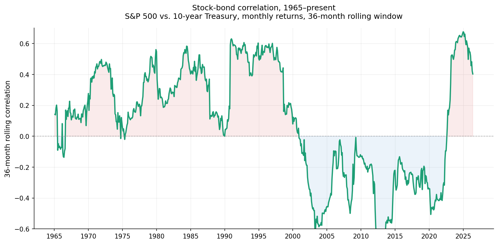
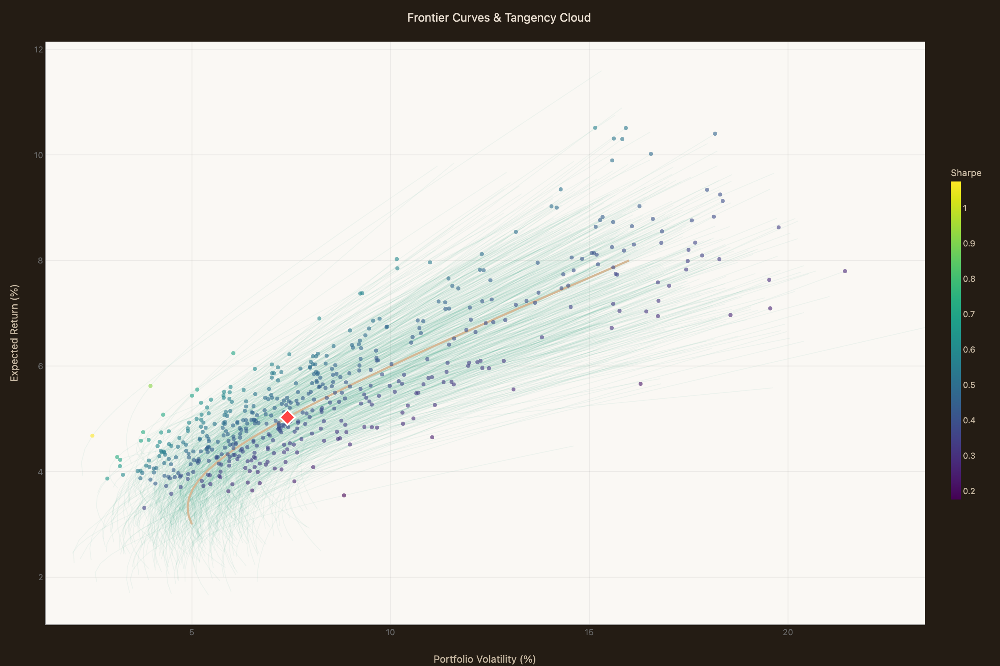

Even if you could estimate the parameters perfectly from a historical window, the parameters themselves change.
The previous chapter showed that within a single set of historical data, there’s substantial uncertainty about what the “right” inputs to the framework are — and that this uncertainty propagates into wide variation in the “optimal” allocation. But that discussion implicitly assumed something else: that the inputs we’re uncertain about are themselves stable. That with enough data, or better estimation methods, we could pin them down.
This chapter examines that assumption. It turns out the inputs aren’t stable. The historical summaries we’d compute from data drift over time, sometimes gradually, sometimes sharply. The “true parameters” the previous chapter was implicitly chasing aren’t sitting still — they’re moving targets.
Notice what the Markowitz framework asks of you. It asks for a set of parameters — expected returns, volatilities, correlations — and produces a frontier of efficient portfolios, plus a special point on that frontier (the tangency portfolio, if you’ve also specified a risk-free rate). It doesn’t ask when those parameters apply, how long they’ll persist, or what to do when they change. The framework is single-period: given these parameters now, here’s the set of efficient allocations.
This is worth flagging because the framework’s outputs are often treated as recommendations for real-world investment decisions, which always play out over time. Markowitz’s original work was more careful — it described efficient portfolios as ones not dominated on mean and variance, leaving the choice among them to the investor. But in subsequent practice, the tangency portfolio in particular has often been treated as straightforwardly “the optimal portfolio,” and mean-variance optimization software often presents outputs in recommendation-like form.
When the framework is used this way — its outputs treated as forward-looking recommendations — the time question becomes urgent. The framework was designed to characterize efficient portfolios under a given set of inputs. It wasn’t designed to handle inputs that change. In practice, the standard approach is to estimate parameters from a recent historical window (say, the last 10 or 20 years), feed them into the framework, get a recommendation, and apply that recommendation going forward. The implicit assumption is that the parameters from the historical window will be roughly the same in the future.
How well does this assumption hold up?
Of all the inputs to portfolio optimization, correlation is the most consequential for the case for diversification. If stocks and bonds are uncorrelated or negatively correlated, holding both reduces portfolio volatility for any given expected return — that’s the mathematical foundation of the standard 60/40 portfolio and similar diversified strategies. If they become strongly positively correlated, the diversification benefit collapses, and the portfolio behaves more like a leveraged equity position than a balanced strategy.
So: what is the correlation between stocks and bonds?
The chart below shows the 36-month rolling correlation between monthly S&P 500 returns and 10-year Treasury returns, from 1965 to the present. The chart is a single line, but it tells a story that single-number summaries can’t.

What you see: correlation was solidly positive — often 0.3 or higher — through the late 1990s. Around 2000, it dropped sharply and went negative, where it stayed for most of the next two decades. Around 2022, it flipped back to positive.
These aren’t gradual drifts. They’re regime shifts: the correlation moved from one persistent value to a meaningfully different persistent value over a relatively short span. A portfolio constructed in 1995 using “the historical stock-bond correlation” would have used a number that was about to become obsolete. A portfolio constructed in 2010 using the same approach would have used a number that, by 2022, had also become obsolete.
Stock-bond correlation isn’t a fixed feature of the markets — it’s a number we calculate from data, and what we get depends on what data and what method. The chart above is one such calculation; others would show the same qualitative story (drift between regimes) with different specific numbers.
Recall what the framework does: it takes parameters as inputs and produces an “optimal” allocation. If the parameters change, the “optimal” allocation changes too — sometimes substantially.
A 60/40 stock-bond portfolio is often justified by appeals to diversification benefits that depend on stock-bond correlation being low or negative. During the long period of negative correlation (roughly 2000–2022), this justification was empirically supported — the diversification benefit was real and substantial, with bonds reliably gaining when stocks fell. In 2022, when correlations flipped positive, that justification temporarily evaporated. Stocks and bonds fell together. The 60/40 portfolio had its worst year in decades, not because the framework recommended it incorrectly given the inputs, but because the inputs that had supported the recommendation were no longer accurate.

This is a different kind of problem than the parameter uncertainty discussed in the previous chapter. There, the issue was that within a given historical window, multiple defensible estimates produce different recommendations. Here, the issue is that the underlying quantities being estimated aren’t stable across windows. Even with infinite data from a particular era, you’d get an estimate that captures that era’s behavior, not the future’s.
The mean-variance framework has no way to model this. It treats its inputs as features of a stationary world, and produces recommendations that assume the inputs will continue to apply. When the inputs shift, the framework has nothing to say — until someone re-estimates with a more recent window and re-runs the optimization, producing a different “optimal” allocation. The recommendations keep moving, not because the analyst’s method is improving, but because the underlying world is changing.
There isn’t a clean answer. Reasonable approaches include:
None of these approaches make the underlying problem go away. The framework was designed for a world with stable parameters. The actual world has parameters that drift, sometimes sharply, and any single-period optimization is making an implicit bet that the parameters won’t change much during the period being optimized over.
The previous chapter showed that, within a given set of historical data, parameter uncertainty produces wide spreads in the “optimal” allocation. This chapter shows that the parameters themselves drift over time. These problems compound.
If you imagine the cloud of “optimal” allocations from the previous chapter’s widget — the cloud you get from parameter uncertainty alone — and then imagine that cloud moving over time as the parameters drift, you have a more complete picture of how unstable the framework’s recommendations actually are. The “optimal” portfolio isn’t a single point. It isn’t even a cloud. It’s a cloud that’s shifting position from era to era, sometimes substantially.
That’s a long way from the precise-looking output the framework produces.
The next chapter looks at what happens when you add another layer of complexity: more than two assets. In the two-asset case, “optimization” is somewhat trivial — there’s only one degree of freedom, the stock-bond split. With three or more assets, the optimization becomes a real choice, and the problems we’ve been examining get richer.